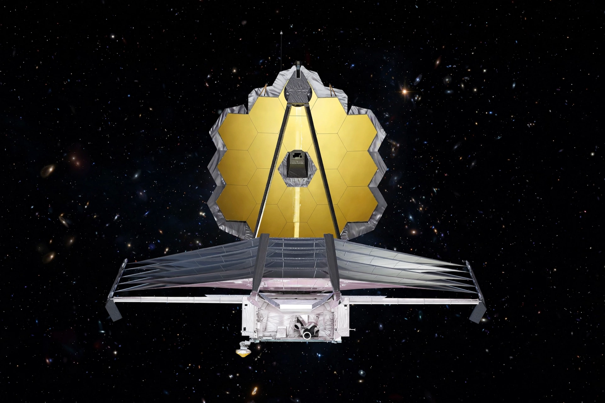

[Image: Webb's gold segmented mirror and silver sunshield in space]
Mission
Launched on Christmas Day 2021 on an Ariane 5 from Kourou (an ESA contribution), Webb unfolded in space over two weeks and began science in July 2022 with the release of its first images, including the SMACS 0723 deep field. It is a partnership of NASA, ESA and the Canadian Space Agency, operated by the Space Telescope Science Institute.
Science
Webb studies the first stars and galaxies, the assembly of galaxies, star and planet formation behind dust clouds, and the atmospheres of exoplanets — including molecules such as water vapour, CO2 and methane reported in early results, as recalled.